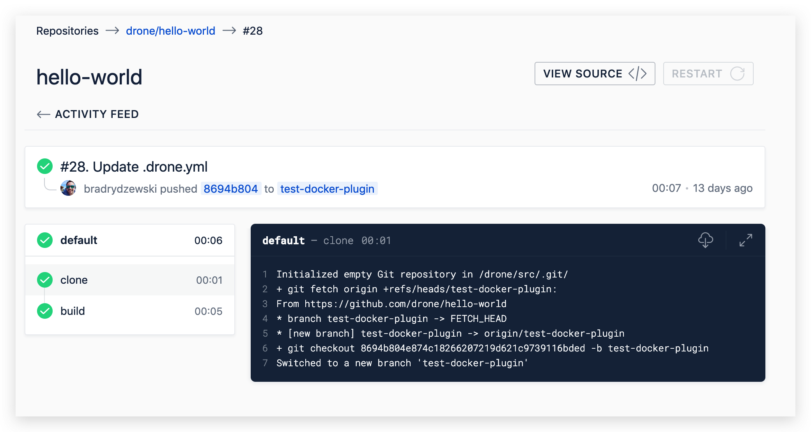

Drone is a Container-Native, Continuous Delivery Platform. Drone 是一个基于容器的持续交付平台。
使用Drone进行持续集成已经8个月了，因为功能基本满足我的需求，所以一直停留在0.8版本。今天正好有时间，遂打算升级到1.0.0版本并记录下Drone的升级+使用。
我一直使用 Docker Compose 运行Drone，本文也将主要讲基于Docker Compose升级启动过程。在配置中，我以集成Gogs为例，要集成其他其他平台（如Github、GitLab）配置也很简单，具体请参照官网的 Installation Guide 下的各平台配置说明。
1.0版本与0.8版本不兼容，需要修改各个配置项的名称，在1.0版本找到对应的配置名称即可。
# file name: docker-compose.yaml
version: '2'
services:
drone-server:
image: drone/drone:1.0.0-rc.5 # 使用最新的版本
ports:
- "8888:80" # web 访问的端口
- 9000 # 用于与drone-agent通信
volumes:
- /data/drone:/var/lib/drone/ # 持久化到宿主的/data/drone目录下
- /var/run/docker.sock:/var/run/docker.sock # 与docker进行通信
restart: "always"
environment:
- DRONE_GIT_ALWAYS_AUTH=false
- DRONE_GOGS_SERVER=http://gogs.admin.com # 集成gogs
- DRONE_RUNNER_CAPACITY=2
- DRONE_SERVER_HOST=drone.admin.com
- DRONE_SERVER_PROTO=https
- DRONE_RPC_SECRET=da19cfd2-33ed-44d2-8e60-5c987e780f36
- DRONE_USER_CREATE=username:zhangsan,admin:true # 设置用户zhangsan为管理员
- DRONE_LOGS_DEBUG=true
drone-agent:
image: drone/agent:1.0.0-rc.5
restart: "always"
depends_on:
- drone-server
volumes:
- /var/run/docker.sock:/var/run/docker.sock # 与docker进行通信
environment:
- DRONE_RPC_SERVER=drone-server:9000 # 连接到drone-server服务
- DRONE_RPC_SECRET=da19cfd2-33ed-44d2-8e60-5c987e780f36 # 与drone-server保持一致
- DRONE_LOGS_DEBUG=true
执行 docker-compose up 启动server和agent，启动完成后可以访问在配置中指定的地址进入后台管理，由于前面配置了Gogs集成，所以登录的帐号和密码均是Gogs的帐号和密码。
每个项目的设置界面分为4个设置区域：Main、Secrets、Cron Jobs、Badges。
注意：_如果该项目的Project Settings 一栏没有 Trusted 选项，代表在Docker Compose的启动配置中未将当前登录用户设置为Drone的管理员。若项目不设置为 Trusted，则不能进行构建。

具体构建详情，其中，左边列出了构建步骤，点击可以查看各个构建步骤的详细日志。
项目的构建配置在官网给出了详细的示例：
# node构建并挂载目录的示例
kind: pipeline
name: default
steps:
- name: build
image: node:8-alpine # 使用 node:8-alpine 镜像
volumes: # 挂载目录
- name: volData
path: /data/
commands: # 所有linux命令（正确说法是：镜像所支持的所有命令）
- npm install
- npm test
- ls -als /data/
- echo Hello
# 挂载目录的具体配置
volumes:
- name: volData
host:
path: /data/